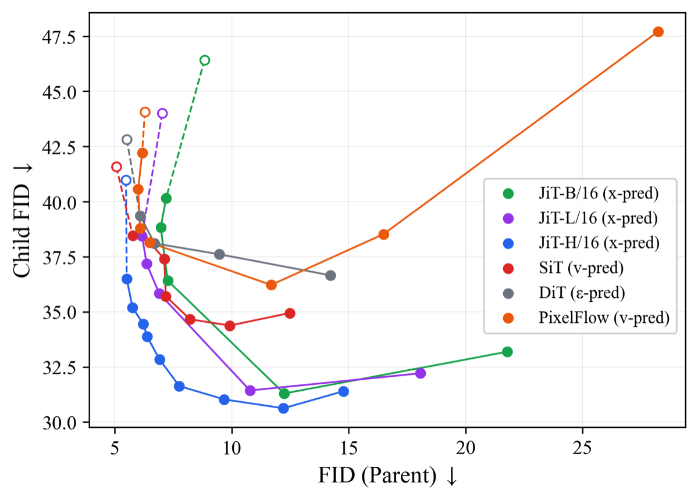
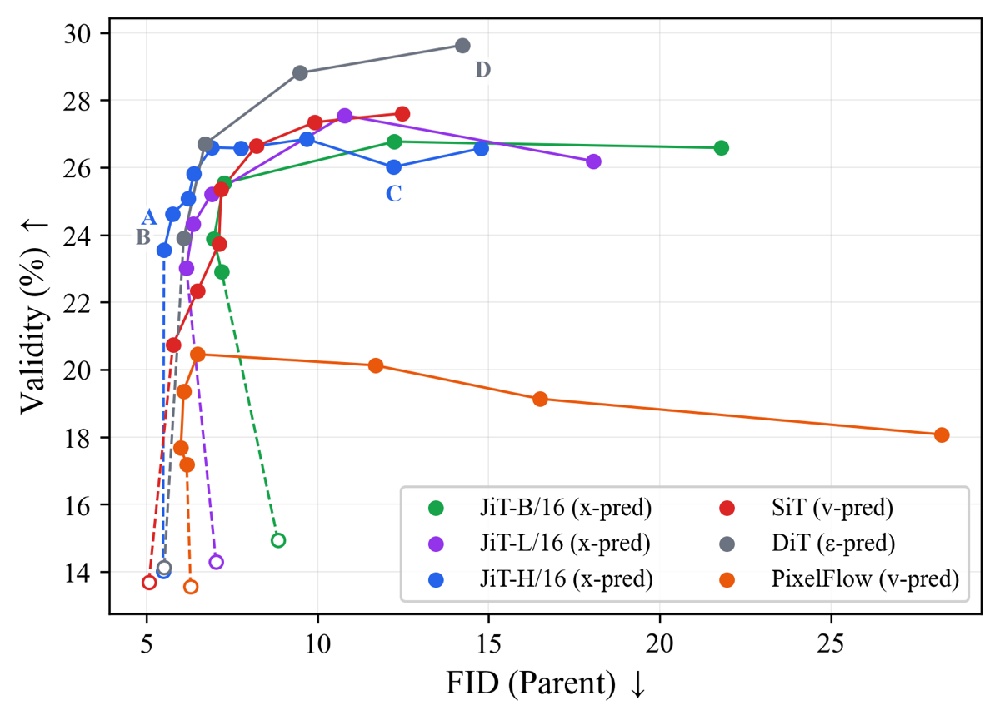
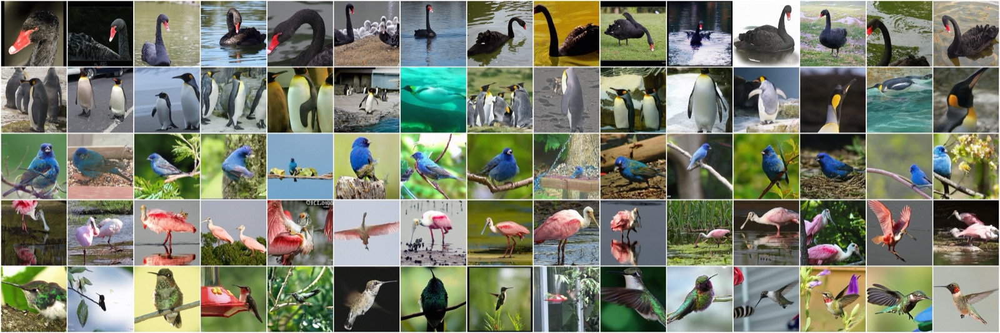
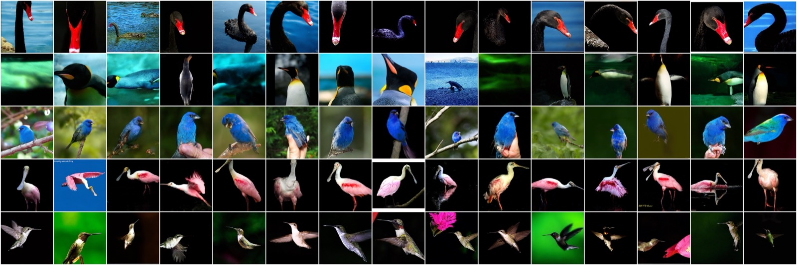
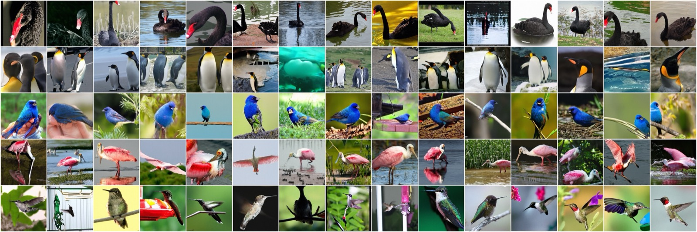
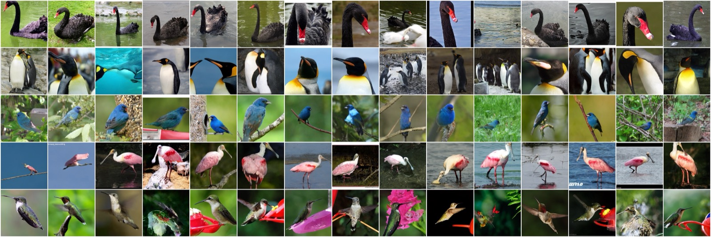
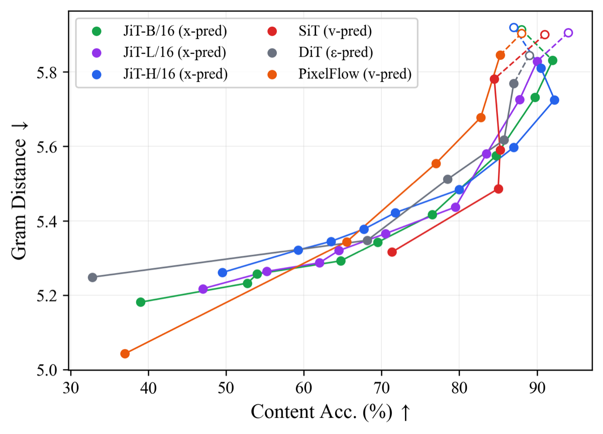

The prediction target determines whether training-free guidance stays on-manifold. (a) Without guidance, every target denoises $z_t$ onto the source class $\mathcal{M}_s \subset \mathcal{M}$. With TFG, $x$-prediction slides along the manifold $\mathcal{M}$ to the target class $\mathcal{M}_t$, while $v/\epsilon$-prediction departs it. (b) Crossed-lines ($D{=}512$, top) and ImageNet examples (bottom): $x$-prediction preserves structure and stays on-manifold, while $\epsilon$-prediction collapses off-manifold with catastrophic artifacts.
Abstract
Training-free guidance (TFG) steers diffusion models without retraining, but strong guidance risks driving samples off-manifold. The resulting catastrophic failures—collapsed, artifact-ridden images—differ from graceful failures, where guidance misses the target but images remain realistic. We trace this distinction to the prediction target: all TFG methods compute guidance from a clean-data estimate $\hat{x}$, so its fidelity governs manifold preservation. We prove a strict error amplification hierarchy: $\epsilon$-prediction's recovery formula divides by $t$, amplifying errors unboundedly at high noise; $v$-prediction incurs bounded amplification; $x$-prediction incurs none. On ImageNet 256×256, we evaluate four pretrained Diffusion Transformers spanning all three targets. At matched classifier accuracy, guided-class FID (Child FID) reveals a 5.2-point gap between $x$- and $\epsilon$-prediction (32.9 vs. 38.1)—manifold damage invisible to standard evaluation. This extends to style transfer, establishing $x$-prediction as the target that keeps guidance failures graceful rather than catastrophic.
Key idea
Every TFG method — DPS, FreeDoM, TFG, LGD, and the rest — computes its guidance signal from a single clean-data estimate $\hat{x}$ recovered from the noisy state $z_t$. How that estimate is recovered depends entirely on the prediction target, and the recovery formula determines how much network error is amplified before it reaches the guidance term.
We prove a strict error-amplification hierarchy:
- $\epsilon$-prediction: $\hat{x}=\frac{z_t-(1-t)\epsilon_\theta}{t}$ divides by $t$, so error amplification is unbounded as $t\to 0$ (high noise).
- $v$-prediction: $\hat{x}=z_t+(1-t)v_\theta$ scales error by $(1-t)$, giving bounded amplification.
- $x$-prediction: $\hat{x}=x_\theta$ is read directly, so guidance inherits no amplification.
This amplification is what pushes guided samples off the data manifold. The effect is invisible to standard FID, which averages over all classes, but it surfaces under guided-class FID (Child FID) evaluated at matched classifier accuracy: on fine-grained ImageNet generation we measure a 5.2-point gap between $x$- and $\epsilon$-prediction ($x$-pred 32.9 vs. $\epsilon$-pred 38.1). The same ordering holds in the 2D→512D crossed-lines ablation, inverse problems, and style transfer.
Results

Child FID vs. parent FID under a guidance-strength ($\rho$) sweep. As DPS guidance strengthens, $x$-prediction (JiT) reaches a markedly lower Child-FID frontier, while $\epsilon$-prediction's (DiT) Child FID stagnates well above it as its parent FID collapses — the 5.2-point gap at matched validity that standard FID hides.

Validity vs. parent FID under the same $\rho$ sweep. Every model gains validity (accuracy of hitting the guided class) as guidance strengthens, but $\epsilon$-prediction (DiT) pays a steep parent-FID cost for its validity gains.
Fine-grained bird generation
On-target ($x$-prediction, JiT) versus off-manifold collapse ($\epsilon$-prediction, DiT) under the same DPS guidance.

JiT ($x$-prediction) — graceful: realistic birds.

DiT ($\epsilon$-prediction) — catastrophic: collapsed, artifact-ridden.

JiT ($x$-prediction) — strong guidance: visible degradation, yet graceful (diverse, recognizable birds).

DiT ($\epsilon$-prediction) — moderate guidance, degradation onset.
Style transfer

CLIP-Gram style guidance: Gram Distance vs. content accuracy. Stronger style guidance improves style fidelity (lower Gram Distance) at the cost of content accuracy. The prediction-target ordering transfers beyond class guidance: $x$-prediction degrades gracefully, retaining higher content accuracy under strong guidance, while $\epsilon$-prediction drops to the lowest. (Style-transfer code is not part of this release; the figure is shown as a result only.)
BibTeX
@inproceedings{lee2026onmanifold,
title = {Not All Prediction Targets Keep Training-Free Diffusion Guidance on the Manifold},
author = {Lee, Yunsung and Lee, Hyeongmin},
booktitle = {European Conference on Computer Vision (ECCV)},
year = {2026}
}